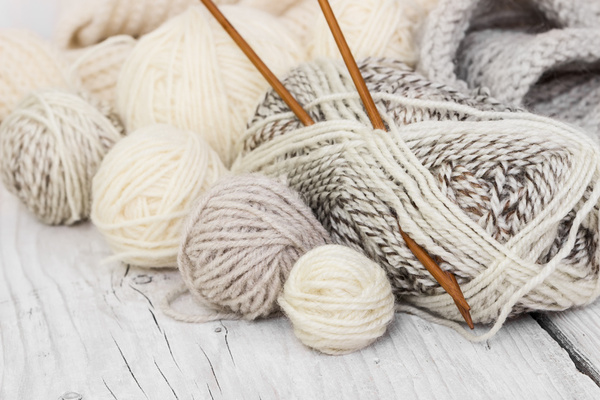

Materials

Most crafts involve having a variety of tools to get started, but for knitting all you really is the following:
- A pair of straight knitting needles; either bamboo or metal.
- Yarn, which comes in a variety of textures and types, from wool to cotton to silk and synthetic fibers.
- A pair of sewing scissors; make sure they're sharp because blunt scissors can damage the yarn.
- A crocheting hook; if you make any mistakes, you can use the hook to save any dropped stitches.
- A tapestry needle for weaving in your ends when you finish.
- Stitch markers; to help you mark you stitches when you switch in between.
- A measuring tape.
 Navigation
Navigation